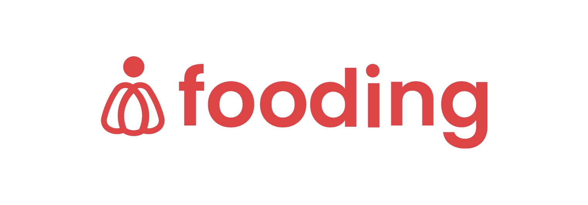
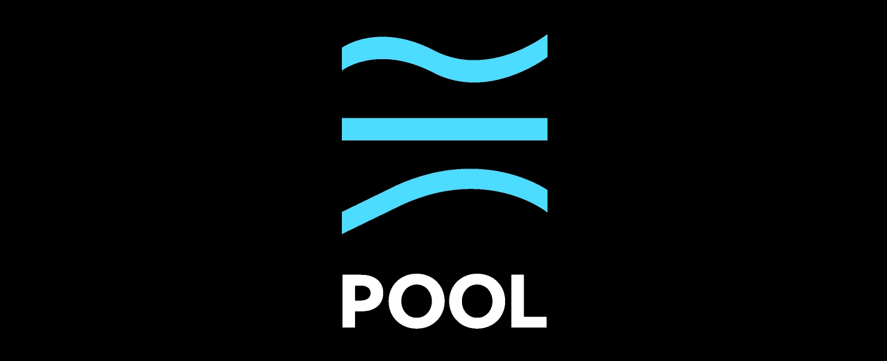
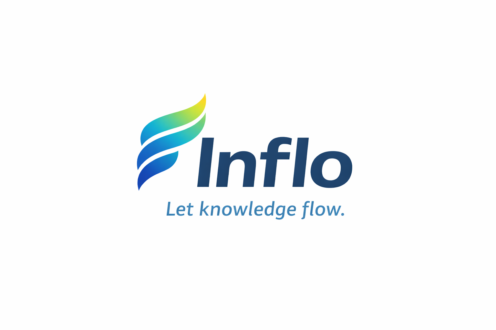

나무 같은 개발자를
꿈꾸는 임성제입니다.
누군가에게 도움이 될 수 있는 사람이 되기 위해 개발자가 되었습니다.
사용자 뿐만 아니라 함께 개발하는 팀원들의 경험까지 고민하는 개발자입니다.
비전 & 가치관
- check 항상 상대방의 입장에서 생각해보는 역지사지 개발자
- check AI 와 함꼐 효율적으로 작업을 수행하는 개발자
- check 결과 뿐만 아니라 과정을 중시하는 성장형 개발자
장점 & 특징
- check 블로그·노션으로 꾸준히 기록하는 습관
- check AWS · NCP · Kubernetes 클라우드 인프라 구축 경험
- check 사용자와 팀원을 모두 생각하는 개발자
기술 스택
지금까지 사용해본 기술 스택입니다.
Java
Primary Language
Spring Boot
Framework
MySQL
관계형 DB
AWS
Cloud 인프라
Git
형상 관리
경험
개발 및 인프라에 대한 경험을 위해 다양한 도전을 해왔습니다.
Customer Experience Management
NAVER Cloud
Mar 2024 - Aug 2024
NCP 및 클라우드 서비스에 대한 기술적 문의에 대응하고 사용자들의 트러블 슈팅을 지원했습니다. 클라우드 서비스 중 NCP에 대한 접근성을 늘리기 위해 쉬운 서비스 사용을 위한 가이드를 작성하고 현재 가이드의 개선안을 작성했습니다.
- check_circle 사용자들의 기술적 문의에 대한 대응 및 트러블 슈팅 지원
- check_circle 클라우드 인프라 입문자들을 위한 가이드 제작 기획
- check_circle 기술 문의 분류 및 분석을 통한 가이드 개선안 작성
- check_circle 신규 사용자 유입을 위한 서비스 접근성 개선안 작성
Back-End Developer
(주)스프레틱스
Mar 2020 - Nov 2020
온라인 원격 코딩 강의를 위한 플랫폼 서버를 개발하고
- check_circle PHP를 통한 API 서버 개발
- check_circle KG이니시스 결제 모듈을 사용한 결제 시스템 개발
- check_circle NCP에서 AWS로 서버 마이그레이션 작업 진행
참여 프로젝트
개발에 대한 경험을 쌓기 위해 교내 및 외부 활동에 참여했습니다.

Fooding
백엔드 개발
Spring Boot, Redis, WebFlux
Spring Boot를 사용한 API 서버 개발, POS기와 서버의 실시간 통신을 위한 WebFlux 모듈 개발, Redis를 사용한 캐싱 처리

Pool
서버 개발
Spring Boot, FCM, gRPC, AWS
FCM을 통한 실시간 알림 구현, gRPC를 통한 실시간 채팅 서버 구현, 프로젝트 구조 리팩토링
Now & Go
서버 개발
Spring Boot, EKS, Kubernetes, Redis
Kubernetes를 사용한 MSA 서비스 개발, Spring Boot를 사용한 API 서비스 개발,

Inflo
풀스택 개발
React, Java, Lambda, WebSocket
Lambda를 사용한 서버리스 API 개발, WebSocket API를 통한 채팅 서비스 개발, 생성형 AI를 사용한 뉴스 요약 및 퀴즈 생성 서비스 개발
학식로그
PL / 클라우드 아키텍처
Kubernetes, EKS, AWS
EKS를 사용한 MSA 인프라 구축, ArgoCD 및 Github Actions를 활용한 CI/CD 파이프라인 자동화
블로그 & 기록
공부하고 경험한 내용을 잊지 않고자 기록하고 누군가에게 도움이 될 수 있도록 게시하고 있습니다.
구름위키
학습한 내용, 트러블 슈팅에 대한 회고 등 개발자로서 경험한 점을 기록하고 있습니다.
Notion 개발 위키
새로운 것을 배우면 꼭 기록하는 습관을 들여 시간이 지나도 리마인드 할 수 있도록 합니다.